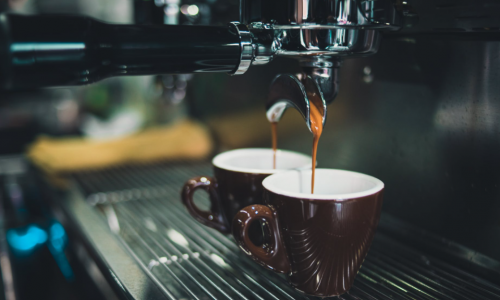
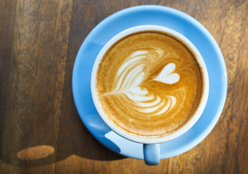

Regular Coffee Drinkers Are Much Healthier Than Non Coffee Drinkers
With just a few calories per cup, coffee is the perfect start to the day
It wakes you up, boosts your metabolic rate, and decreases the risk of some serious health conditions.
Not that coffee drinkers need any convincing…
Coffee is one of the richest sources of phenolics and polyphenols, which are antioxidants.
A typical 8-ounce (240-ml) cup of coffee contains:
- Vitamin B1
- Vitamin B2
- Vitamin B3
- Vitamin B5
- Folate
- Manganese
- Potassium
- Magnesium
- Phosphorus
So, it’s not surprising that coffee is the leading source of antioxidants in Americans’ diets!

Wait, Coffee Is Addictive… That Means It’s Bad For You… Right?
The world’s caffeine obsession can be described as an ‘addiction’ (because when if you stop drinking it, you may go through a mild withdrawal), but scientifically speaking it is not an addiction.
While caffeine produces a small rise in dopamine, it does not cause an imbalance of the reward circuits in the brain… that hard drugs do.
So even though the word ‘addiction’ is often used casually… coffee isn’t going to turn your life upside down.
In fact, quite the opposite… the evidence of its health benefits stacks up very quickly.
Coffee Protects The Liver From Alcohol
Your liver is a vital organ. It is responsible for hundreds of different body functions.
Despite the importance of our liver, we often abuse and damage it by drinking too much alcohol.
Chronic liver damage is called cirrhosis and involves most of your liver turning into scar tissue.
A recent study found that two cups of coffee per day can reduce the risk of alcohol-related liver cirrhosis by up to 43 percent… with the strongest effect for those who drink four or more cups per day.
Liver cancer is the second leading cause of cancer death worldwide. Coffee drinkers have up to a 40% lower risk of liver cancer.
Drinking Coffee Significantly Lowers The Risk Of Depression
Depression is the world’s most common mental disorder. For many people looking for a natural alternative to medication, coffee may offer a partial solution.
In a study that included more than 8,000 depressed individuals, it was found that people who consumed higher levels of coffee were at lower risk of depression by up to one-third.
Much Lower Risk Of Type-2 Diabetes
Type 2 diabetes affects over 300 million people worldwide. It is caused by chronically high blood sugar levels.
Compounds naturally found in coffee, including caffeine, caffeic acid, trigonelline, and cafestol are reported to lower blood sugar levels. By doing so, new research shows that daily coffee consumption can substantially lower the risk of type 2 diabetes.
Another study led by Harvard School of Public Health found that those who decreased their coffee consumption by more than a cup per day increased their type 2 diabetes risk by 17%.
Coffee Is Great For The Heart
In healthy people, consuming 3-5 cups of coffee per day is associated with a 15% reduction in the risk of cardiovascular disease (compared to non-coffee drinkers).
Furthermore, a publication in the American Heart Association journal Circulation: Heart Failure found the more coffee people drank, the lower their risk for heart failure.
Note: benefits don’t extend to people who drink decaf.

Coffee Drinkers Have Better Brain Health
In the short term, coffee can improve mood, concentration, learning, and reaction time. This is because of changes in several neurotransmitters (noradrenaline, dopamine, and serotonin)
Long-term use of coffee may lower the risk of neurodegenerative diseases, including Parkinson’s and Alzheimer’s.
Research suggests that drinking coffee reduces the risk of developing Parkinson’s disease by up to 30%, with most studies indicating three cups of coffee as the beneficial dose.
It seems that men may benefit most from coffee consumption, with some studies showing an up to 60% reduced risk of Parkinson’s disease compared to female coffee drinkers.
Another study associates regular coffee consumption with up to a 65% lower risk of developing Alzheimer’s disease.
Coffee Reduces The Risk Of Some Cancers
Citing a comprehensive study, the American Cancer Society reports that drinking coffee reduces the risk of skin, mouth, throat, liver, and endometrial cancer.
Coffee Drinkers Live Longer
Given that coffee drinkers have a lower risk of many deadly diseases, it comes as no surprise that coffee can help you live longer.
Long-term research found that coffee drinkers had a much lower risk of dying over the 12–13 year study period.
The ideal amount seems to be around 4–5 cups per day, with men having a 12% reduced risk of death and 16% reduced risk of death for women.
Don’t Fall Into The ‘Junk Coffee’ Trap
Coffee can be a double-edged sword…
On one side, if you drink it black, with no sugar, you can drink many cups and enjoy all the benefits explained in this article…
But if you allow yourself to become dependent on drinking junk coffee, you can end up with the opposite health effect… such as diabetes, cardiovascular disease, and obesity.
Junk coffee comes in many different forms… there are those coffee-flavored milkshakes, such as large Frappuccino’s that have at least 800 calories per beverage…
And then there are the single-serve, flavored, packet coffees… filled with sugar and preservatives.
Artificial sweeteners are equally as bad, as they kill off beneficial gut bacteria (which causes obesity), while causing more sugar cravings. And although these sweeteners have no sugar, they will still spike your insulin levels (which causes the body to store fat).
Don’t use artificial creamer and stay away from those flavored syrups.
Instead, practice drinking coffee without sugar… or at least less sugar. Try having one teaspoon of sugar instead of two.
Or have no sugar in your morning and mid-afternoon coffees… and allow yourself sugar for your last cup of the day.
A little milk is fine.
Add some cinnamon. It pairs very well with coffee. Studies show that cinnamon can lower insulin levels and cholesterol.
For a mocha flavor, add a teaspoon of organic cocoa to your coffee. Cocoa is loaded with antioxidants and is proven to have all sorts of health benefits… including a reduced risk of heart disease.
Dislike coffee but want the health benefits? This delicious alternative to coffee has 107X MORE antioxidants than broccoli!
What’s The Best Kind Of Coffee To Drink?
Given the choice between organic coffee and conventional, there’s no question that organic coffee is the healthier option.
But if you can’t afford organic, don’t worry… it’s unclear how much pesticide residue ends up in a cup of non-organic coffee after all the processing. It’s likely very little, as pesticide settles on the surface of the fruit of the coffee tree… the fruit pit is that part that gets roasted and consumed.
Instant coffee is fine.
And of course, it’s always best to drink fair trade coffee where you can.
Enjoy, But Drink Coffee With Caution…
The truth is, there are some negative aspects to coffee… depending on the individual.
People with high blood pressure should avoid consuming large doses of caffeine.
Some drugs won’t work as well in the presence of caffeine. Studies show that drugs like antidepressants, thyroid medication, and osteoporosis drugs can be affected by coffee.
For some people, more than two daily caffeinated beverages could raise migraine risk.
People who suffer from adrenal fatigue should not drink coffee.
Too much caffeine can cause anxiety in people with panic or anxiety disorders.
Caffeine could be harmful to pregnancies. To be on the safe side, drink less.
Coffee isn’t good for stressful situations.
Kids shouldn’t drink coffee.
Coffee can cause ‘teachers breath’.
Too much coffee can give you a ‘wired’, ‘jittery’ feeling.
Coffee can have a laxative effect.
Tweak Your Morning Coffee For An Accelerated Metabolism
Latest studies have found that one tiny tweak to your morning coffee puts your body into fat-burning mode for the rest of the day.
This coffee trick takes less than 10 seconds…
Yet, it instantly ignites your metabolism and boosts your health, energy and well-being at the same time!
====> Try This 10 Sec Fat-Burning Coffee Trick!
Now you have a bunch of reasons to feel good about ‘putting the kettle on’!